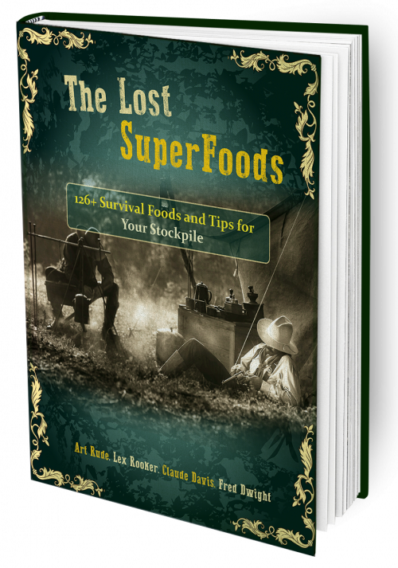

The Lost SuperFoods
Product profile · Marketplace data 2026-10-09 · Sales-page research 2026-10-09 · Categories: Survival

Marketplace record
| Product type | Book (printed) |
|---|---|
| Price | $54.29 (Single payment) |
| Affiliate commission | 75% |
| Refund window | Per the vendor's sales page — check the official page before buying |
| Vendor | lostrec (listed since 2021-03-04) |
| Marketplace stats* | Cart conversion 19% · cancel rate 1.7% · affiliate earnings/sale $26.11 |
* Vendor-side marketplace statistics reported by Digistore24; they depend on traffic quality and are not a forecast.
Vendor's marketplace description
NEW in 2022 for Affiliates! From the creators of The Lost Ways and The Lost Book of Remedies!This bestselling product, is now available (as of 2022) for you to promote it and make lots of sales fast. 90% commissions available on upsells. Our product is not available for Facebook, Instagram, and TikTok. Brand Bidding on Google AdWords is not allowed. We strictly enforce our rules and affiliates fou…
From the vendor's sales page
Page title: The Ultimate Survival Foods
Meta description: With over 126 forgotten survival foods and storage hacks “The Lost Super Foods” is a vital book to place in your survival stockpile.
Headline
The US Army’s Forgotten Food Miracle
And 126 Superfoods That You Can Store Without Refrigeration for Years
Here’s just a small glimpse of what you’ll find in
Prices mentioned on the page: $0.37 · $100 · $20 · $27 · $200 · $37. · $25.00
Guarantee language found: “60” — always confirm the current terms on the official page before relying on it.
CTA buttons: “Get Started →”
Opening copy
This lost survival food knowledge is so organized that anyone, even people with absolutely no prior cooking or stockpiling experience can take advantage of it.
Everything is explained in a clear, precise step by step fashion, using colored pictures and easy to follow instructions.
With over 126 forgotten survival foods and storage hacks “The Lost Superfoods” is a vital book to place in your survival stockpile.
Research method: raw HTML fetch · 3691 words on page · quality: rich · researched 2026-10-09. Full research file (MD) ↗
Where to check it out
Read the vendor's full sales page (current price, guarantee terms and bonuses are listed there):
View official sales page
That link is an affiliate link — if you buy through it we earn a commission from the vendor at no extra cost to you.